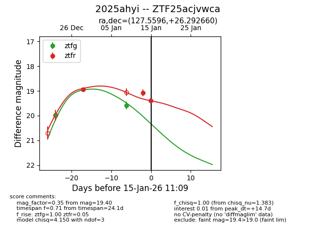
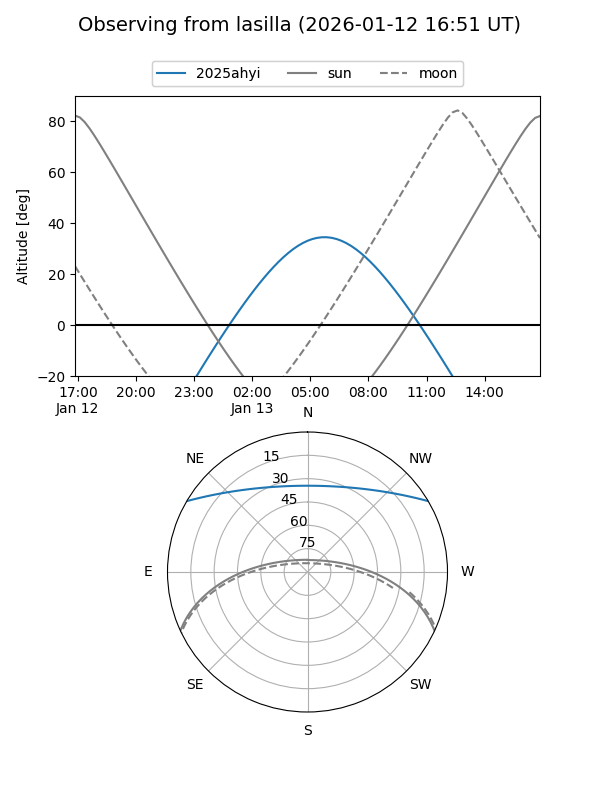
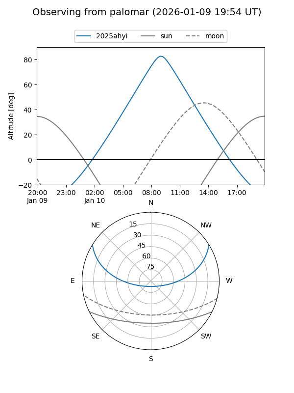
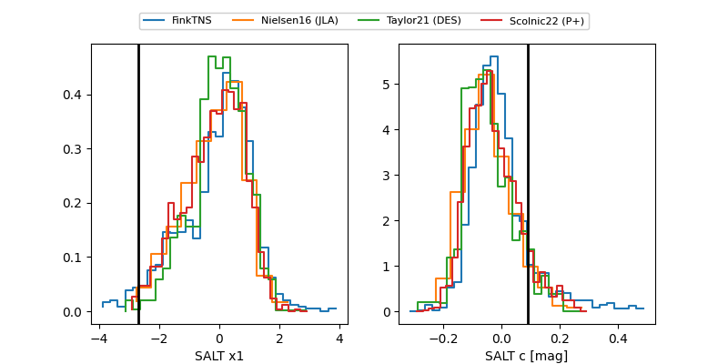

2025ahyi
Target 2025ahyi at 2025-12-31 18:00
Aliases and brokers:
FINK: link
Lasair: link
ALeRCE: link
TNS: link
YSE: link
alt names
ZTF25acjvwca (ztf,fink_ztf)
2025ahyi (tns,yse)
Coordinates:
equatorial (ra, dec) = 127.5596,+26.29266
equatorial (HMS+DMS) = 08:30:14.31,+26:17:33.58
galactic (l, b) = (197.5946,+32.37133)
Flags:
Photometry:
last ztfg=19.97, ztfr=18.94
1 ztfg, 1 ztfr detections
Lightcurve

Visibility


Additional plots
